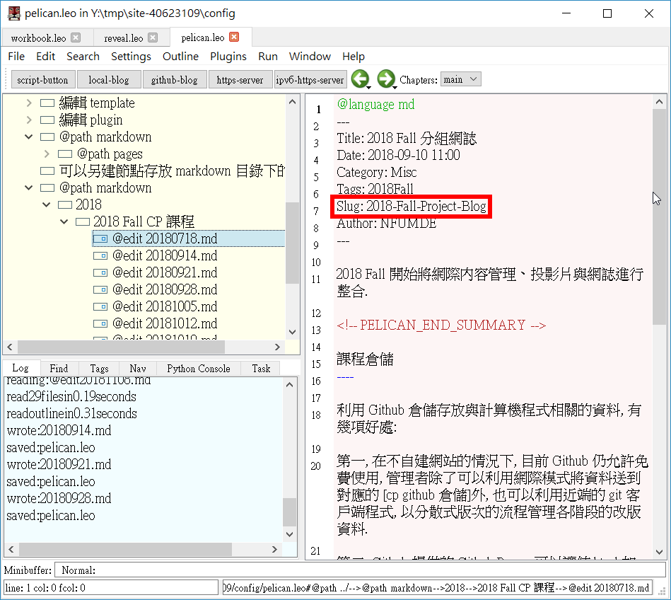

Week1~Week9 << Previous Next >> 實體筆記照片
組員心得
Week1 心得
開學第一週上課，上課內容還算跟得上，預計之後的每一週都定期的去操作練習，這樣就會慢慢的進步，也會對使用的程式更加的熟悉。
Week2 心得
今日上課內容在準備好個人網站、網誌和簡報，並且每週都要進行更新，也開始使用 Onshape 進行畫圖，可是教材都是英文，所以利用英英辭典去翻譯且學習，剛開始真的很難，因為只要有一個單字部會在用英英辭典去看英文的意思，這樣讓我看到又不會的單字，但是我想如果每個我都有一個一個慢慢去學那英文單字也就會認識非常多的。
Week3 心得
上課中練習 git 的指令，這一次的練習讓我學到很多，也對 git 有多點的了解。回去在更新網誌時，出現問題並詢問老師如何處理，發現原來只是我在做 pelican.leo更新時把所有 slug 打成相同的，所以才造成我的 blog 出現問題。

Week4 心得
使用軟件 Onshape ，內容跟 CAD 差不多，但操作上還沒適應，還發現有些地方設計得比 CAD 好操作，可是有些想使用的工具 CAD 上找的到在這就找不到了，應該是我對這個軟件不太熟悉，期望之後能透過練習、閱讀來讓我更加熟練這個軟件。
Week5 心得
繼續練習使用 Onshape ，今天畫一張圖發現它可以使用三種或更多種方式去畫圖，在使用 Onshape 的過程中還發現了新的工具，像 : boolean(說明網站) ，操作練習越多越能發現好玩有趣的東西。
單字說明:
Week6 心得
今天學到在網誌上以圖片的方式放入 Youtube 影片連結，也將在範例網站上的行事曆複製放在自己的網站上，這樣就能更清楚了解自己做了甚麼。
Week7 心得
離期中週很近了，現在每週都會在 Onshape 上練習畫圖，雖然進度慢了點，但還是希望自己能夠慢慢學並學好使用。
Week8 心得
下週就是期中考週了，現在在努力的練習 Onshape ，但還是有定期的更新網誌。
Week9 心得
這週是期中考週，已經過去 8 週了，時間過得很快，雖然還沒能練習完 Onshape，但期中之後還是可以去練習。
Week1~Week9 << Previous Next >> 實體筆記照片